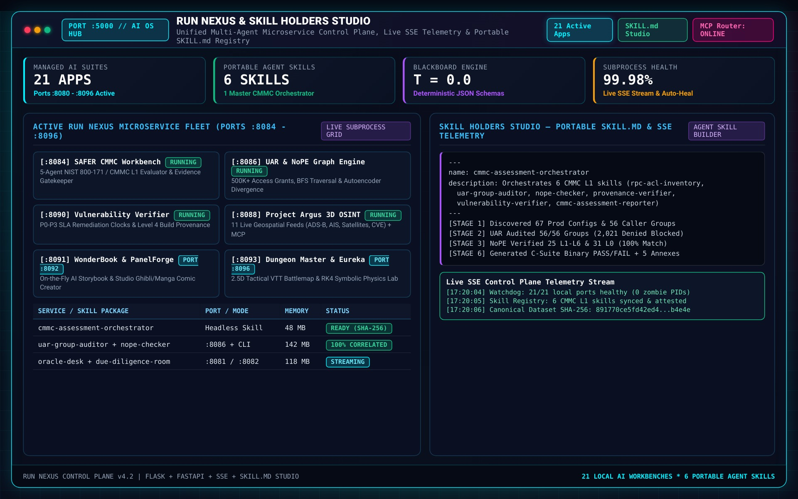
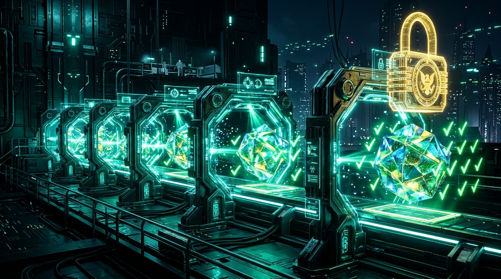

Flagship Engineering Builds
Start with my 6 core flagship architectures below, switch tracks inline, or open the Full 38-System Explorer for instant search & compact table view.

AiLabs: 4-Provider Agentic Coding IDE & Multi-Agent Runtime
Clean-room, zero-dependency Agentic Coding IDE & Multi-Agent Runtime (Port 8120 in Run Nexus) uniting Local Ollama, Google Gemini, Anthropic Claude, and OpenAI across 22 native tools, 6-tier team/personal customizations, progressive SKILL.md disclosure, git-worktree subagents, Pre/PostToolUse security hooks, and Eager/Lazy MCP.

SkillForge AI: 1:1 Skill Builder (skill-creator) & Multi-Skill Orchestrator Studio
1:1 Skill Builder (skill-creator) Studio, Headless CLI Python AST Decoupler, Paired Subprocess Evals + HTML Eval Viewer, feedback.json Rewriter, 60/40 Trigger Optimizer, and Sequential Multi-Skill Orchestrator (2-Run SHA-256 Determinism) powered by Local Ollama, Google Gemini, Anthropic Claude, and OpenAI.

Zero-Leak RAG Lab: Identity-Aware Enterprise Grounding & RLS Studio
Interactive Enterprise AI Grounding & Security Architecture Workbench defeating the “Confused Deputy” RAG data-leakage anti-pattern via Pre-Retrieval OAuth/IAM ACLs, BigQuery Row-Level Security (RLS), Hybrid Sparse BM25 + Dense Vector Reciprocal Rank Fusion (RRF), Prompt-Injection & Citation Guardrails, and a RAG vs. Long-Context vs. Fine-Tuning trade-off calculator.

TrustForge SOC 2: Autonomous SOC 2 Type II Audit, 7-Gate Exception Triage & Privacy Crosswalk Studio
Autonomous AICPA SOC 2 Type I & Type II readiness, 5 Trust Services Categories (28 criteria + 2022 Revised Points of Focus) continuous evidence engine, 7-Gate adversarial exception triage (True Positive vs. Compensating Control False Positive), subservice vendor CUEC & Bridge-Letter analyzer, and ISO 27001 / NIST 800-53 / HIPAA / GDPR / PCI-DSS crosswalk studio with 3-run SHA-256 determinism.

Run Nexus & Skill Holders Studio
A full-stack personal AI operating system and microservice orchestrator managing 20+ specialized LLM applications (including AiLabs on :8120 and SkillForge AI on :8108), live process telemetry, workspace storage, and Skill Holders Studio for portable AI Agent Skills and MCP workflows.

SAFER AI Workbench & CMMC Multi-Agent Engine
An enterprise-grade 5-agent sequential LLM compliance engine operating at T=0.0 over a Shared Team Blackboard with strict JSON quality gates across 6 CMMC domains and 17 security practices.